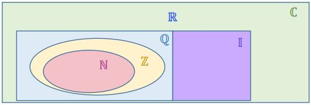

CONJUNTOS NUMÉRICOS
Todos os números que conhecemos são classificados em grupos de acordo com suas características. A imagem abaixo apresenta uma relação entre os conjuntos.

Tabela dos conjuntos numéricos, disponibilizadas pela professora Dra. VALERIA ESPINDOLA LESSA, no material didático: MD2 - Conjuntos e Conjuntos Numéricos, na página 4, disponível no SIGAA, para a turma de informática do primeiro ano, de 2023, do IFRS, Campus Erechim.
NÚMEROS NATURAIS ℕ
Os números naturais são representados por: ℕ = {0, 1, 2, 3, 4, 5, 6 ,7 , 8 ,9,...}
Começando pelo zero, o próximo número é o dois, seguindo uma ordem crescente. Podemos entender isso pensando que o sucessor será o número mais um.
SUBCONJUNTO
Um subconjunto de ℕ é o conjunto ℕ*, excluindo o zero.
ℕ∗ = ℕ − {0} = {1, 2, 3, 4, 5, 6, 7, 8, 9, ... }
NÚMEROS INTEIROS ℤ
O conjunto dos números inteiros é representado por: ℤ = {... , −4, −3, −2, −1, 0, 1, 2, 3, 4, ... } O conjunto dos naturais é um subconjunto dos inteiros, pois os inteiros são os naturais mais os negativos..
SUBCONJUNTO
ℤ* é um subconjunto dos números inteiros, representando o conjunto dos números inteiros sem o zero. ℤ∗ = ℤ − {0} = {... , −3, −2, −1, 1, 2, 3, ... }
INTEIROS NÃO NEGATIVOS
Representado por ℤ-, esse conjunto representa todos os número não positivos, incluindo o zero. ℤ+ = {0, 1, 2, 3, 4, 5, 6, ... }
INTEIROS NÃO POSITIVOS
Representado por ℤ+, o conjunto representa todos os número não negativos, incluindo o zero.
ℤ− = {... , −4, −3, −2, −1, 0}
ℤ+ = {0, 1, 2, 3, 4, ...}
Ainda temos os conjuntos não positivos e não negativos sem o zero. Sendo representados:
ℤ+∗ = { 1, 2, 3, 4, 5, 6, ... }
ℤ−∗ = {... , −4, −3, −2, −1}
NÚMEROS RACIONAIS ℚ
Os números racionais é composto pelo conjunto ℤ, Nele está inclusa todas as frações positivas e negativas, com numerador e denominador inteiros diferente de zero. Representado assim:
ℚ = {𝑥 | 𝑥 = 𝑎/𝑏 , 𝑐𝑜𝑚 𝑎 ∈ ℤ, 𝑏 ∈ ℤ 𝑒 𝑏 ≠ 0}
NÚMEROS IRRACIONAIS 𝕀
Algumas medidas não podiam ser representadas por um número decimal ou por uma dízima periódica, então, sentiu-se a necessidade de criar outro conjunto, os irracionais.
As raízes de um número que não podem ser extraídas desta raiz.
Exemplo: −√5, -√3, √2, √3, …
Números obtidos a partir de outro número irracional. Exemplo:
1 + √2 , √5/2, ..
O número 𝜋. Exemplo:
𝜋 = 3,141592 …
O número de ouro, que é um número encontrado em muitas proporções da natureza e em obras de arte. Exemplo:
𝜑 = (1 + √5)/2 = 1,6180229887 ...
NÚMEROS REAIS ℝ
Os números reais é uma junção dos números racionais com os irracionais. Exemplo:
ℝ = ℚ ∪ 𝕀
NÚMEROS COMPLEXOS ℂ
Os complexos foram criados para resolver algumas equações que não tem solução no conjunto dos reais. Foi definida a unidade imaginária 𝒊 = √−1. Equações:
𝑆 = {𝑥 ∈ ℂ | 𝑥 = ±𝑖}